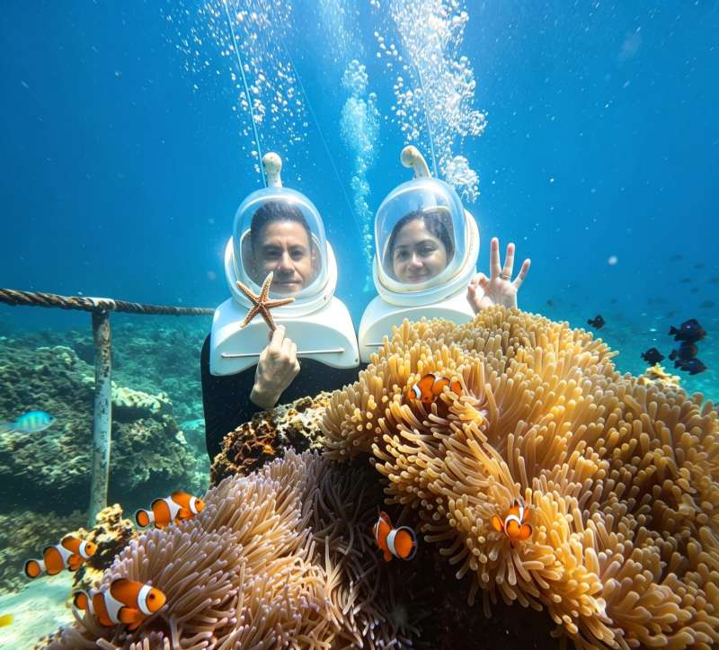
HELMET DIVING
헬멧다이빙
눈앞을 스치는 물고기들. 바닷속 풍경 속으로 한 걸음 들어가 보세요.
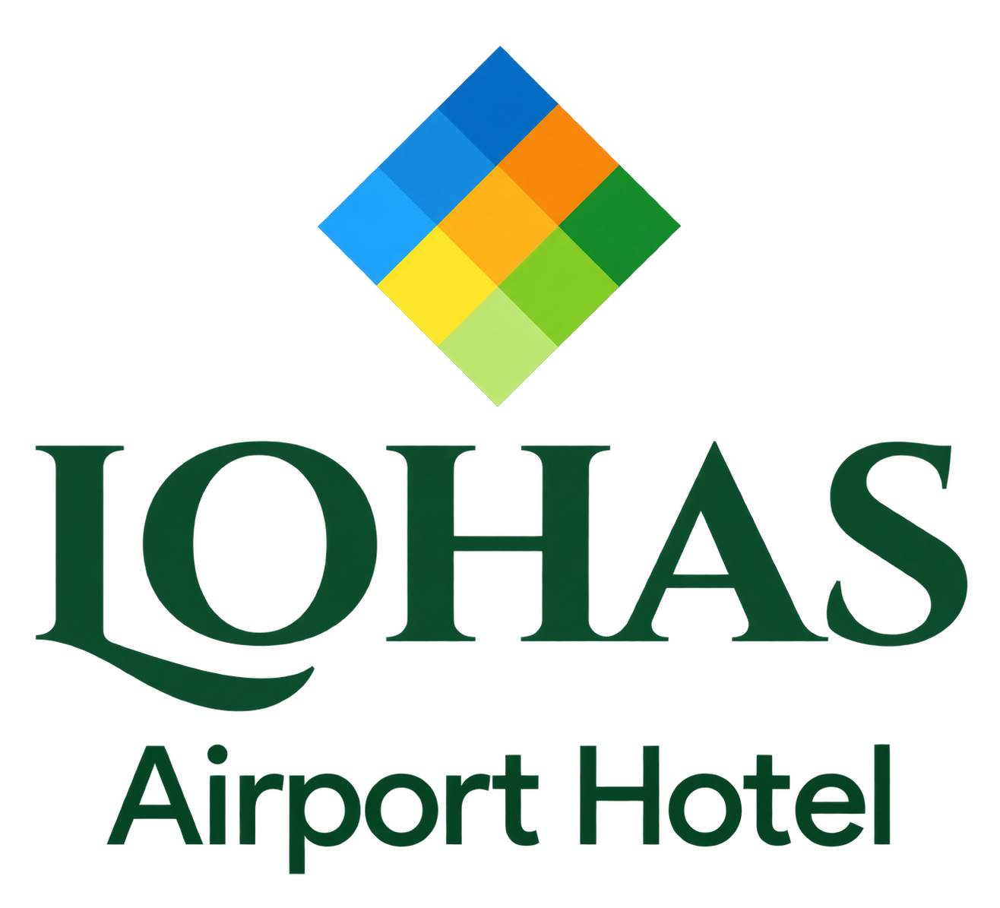
함께 여행 만들기 ↗
공항에 도착하면 에어포트 호텔에서 잠시 쉬어가고,
차로 8분이면 아쿠아 리조트의 바다를 만날 수 있습니다.
공항에서 호텔까지 약 5분, 호텔에서 아쿠아 리조트까지 약 8분입니다. 차량 이용 조건은 미리 문의해 주세요.
01 / YOUR OCEAN, YOUR WAY
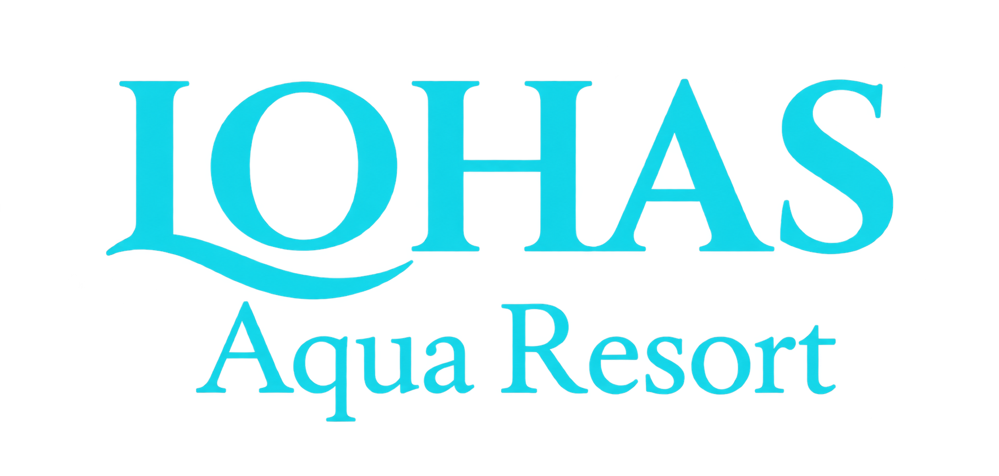
물고기를 따라 천천히, 파도를 가르며 신나게.
마음이 이끄는 체험을 하나씩 골라보세요.

눈앞을 스치는 물고기들. 바닷속 풍경 속으로 한 걸음 들어가 보세요.
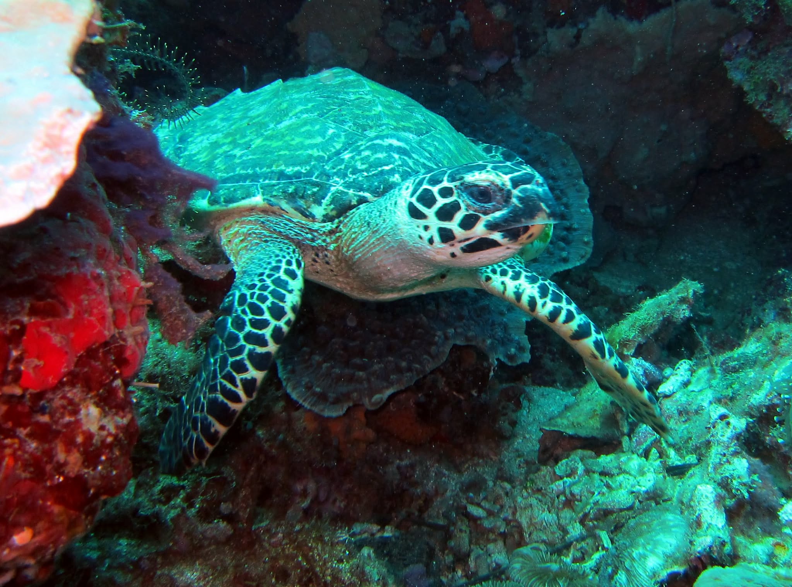
수면 아래 펼쳐지는 또 다른 세상. 바다의 작은 움직임까지 가까이 만나보세요.
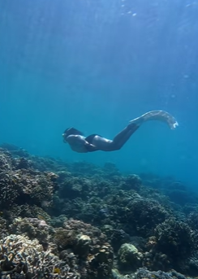
FREE DIVING03숨을 고르고,
고요한 바다 속으로.
잠시 소란을 뒤로하고, 물결에 온전히 집중해 보세요.
프리다이빙은 개별 선택할 수 있으며, 참여 조건과 일정은 미리 안내해 드립니다.
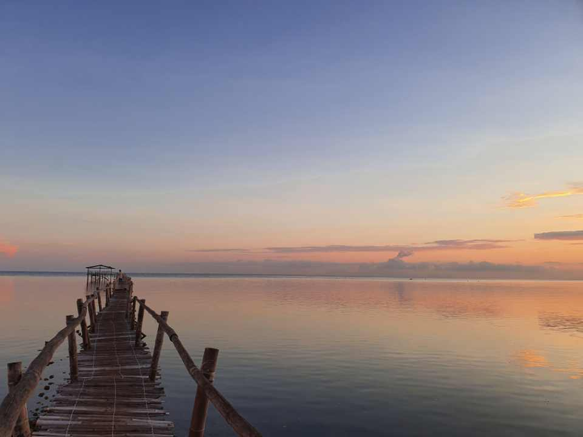
하늘과 바다가 노을빛으로 물드는 시간.
하루의 끝을 천천히 바라보세요.
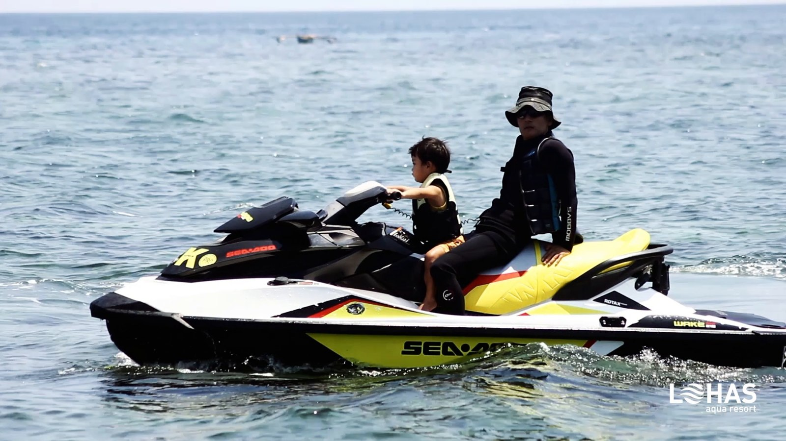
04바람을 맞으며 달리는 짜릿한 순간
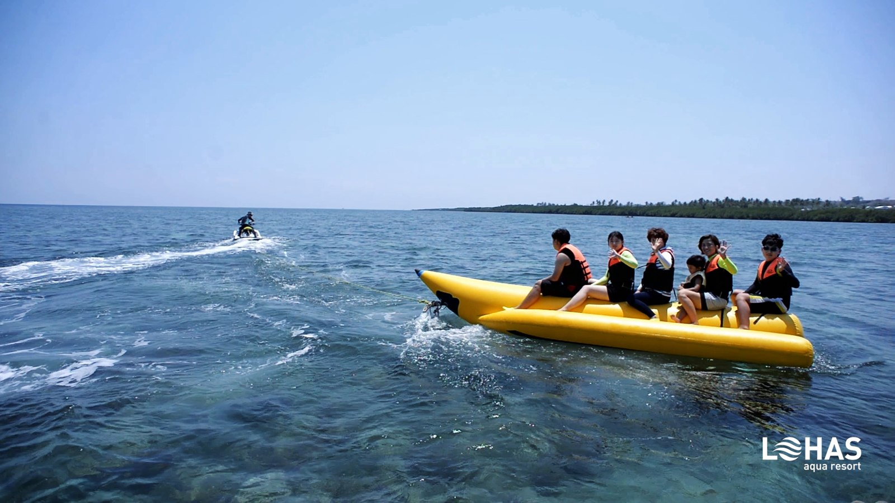
05물보라 사이로 터지는 함께의 웃음
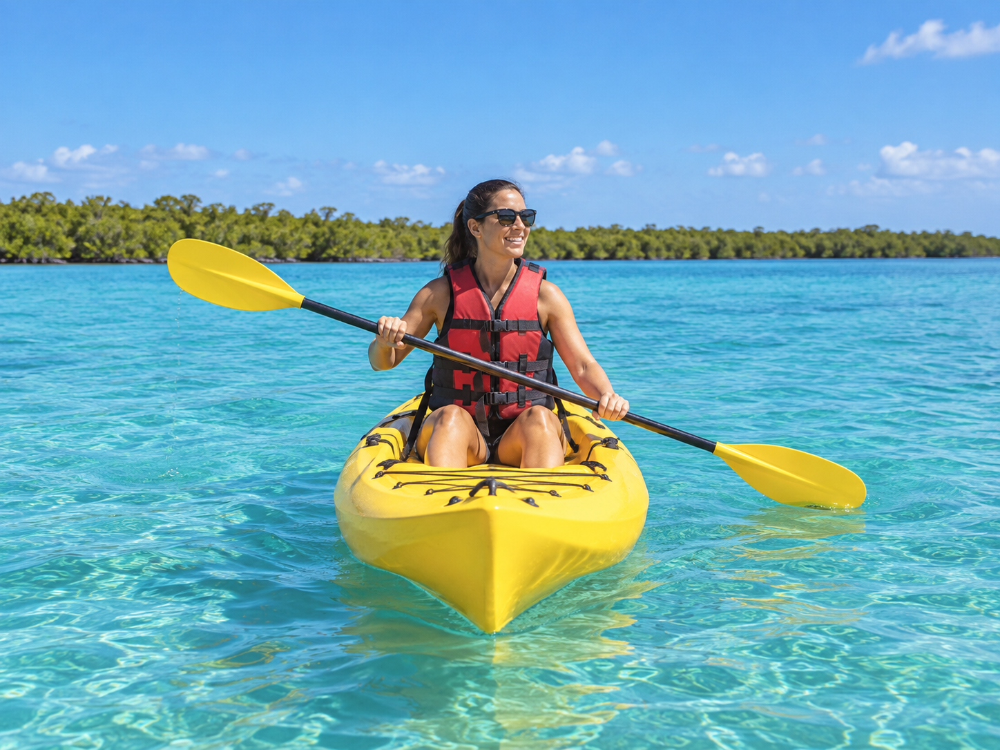
06노를 젓는 만큼, 느긋해지는 하루
AI 생성 이미지마음에 드는 체험만 하나씩 골라 즐기세요. 체험별 참여 조건과 당일 날씨에 따른 운영 여부는 이용 전에 안내해 드립니다.
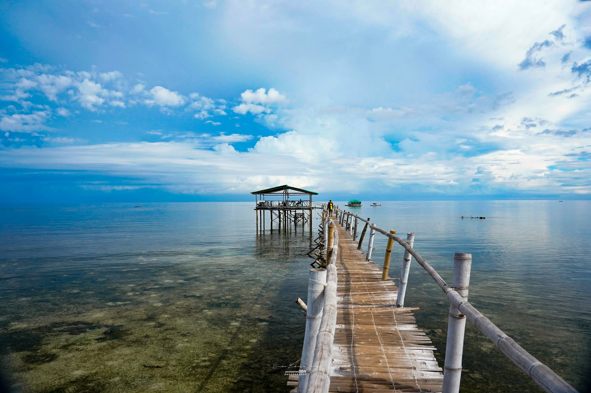
02 / A TABLE TO REMEMBER
알리망고 게와 새우가 푸짐하게 차려진 한 상. 필리핀의 정을 나누는 점심, 부들파이트입니다.
바나나 잎 위에 해산물과 열대과일을 넉넉히 펼칩니다. 바다에서 보낸 이야기를 나누다 보면, 함께 먹는 이 시간이 오래 남을 추억이 됩니다.
바다를 바라보며 둘러앉을 수 있도록, 약 50명이 함께하는 바지선 식사 공간을 준비하고 있습니다.
2026년 9월 내 완공 예정 · 운영 시작일은 추후 안내합니다.03 / A PLACE TO UNWIND
바다에서 호텔까지, 차량으로 약 5분.
객실에서 쉬고, 식사와 수영도 느긋하게 즐겨보세요.
| 객실 타입 | 침대 구성 | 기준 인원 |
|---|---|---|
| 스탠다드 싱글 | 더블 1개 | 2명 |
| 스탠다드 트윈 | 싱글 2개 | 2명 |
| 그랜드 슈페리어 | 퀸 1개 | 2명 |
| 클래식 디럭스 | 더블 1개 + 싱글 1개 | 3명 |
| 이그제큐티브 | 킹 1개 | 2명 |
| 그랜드 디럭스 | 더블 1개 + 퀸 1개 | 4명 |
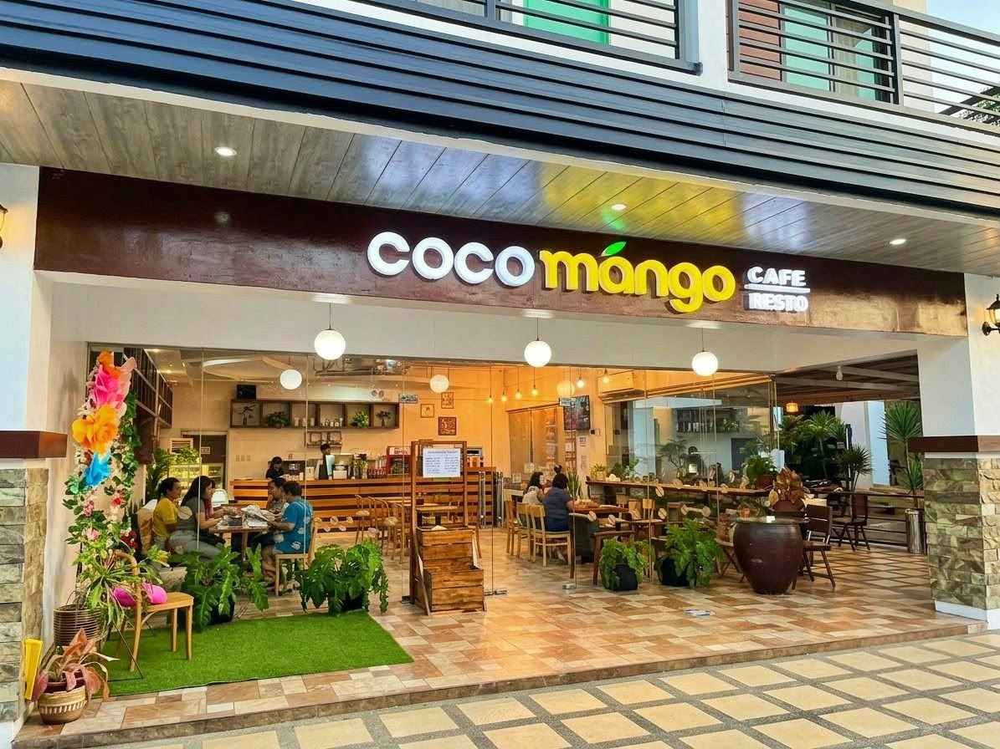
COCO MANGO
맛있는 식사에 여행 이야기를 곁들이는 곳. 호텔 안 코코망고에서 잠시 쉬어가세요.
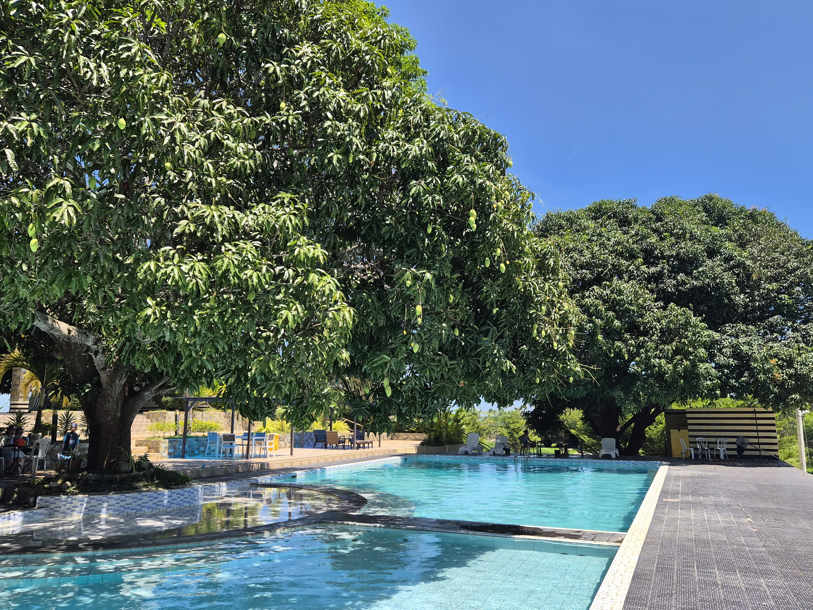
POOL & CLUBHOUSE
물놀이를 즐기다가, 나무 곁에서 잠시 쉬다가. 서두를 일 없는 오후를 보내세요.
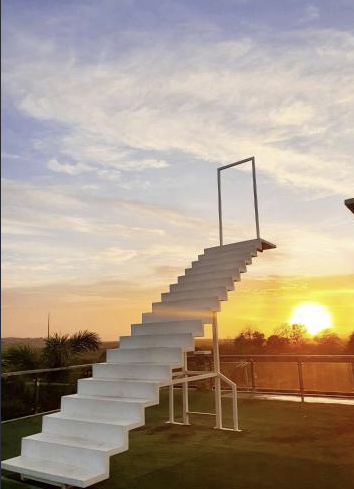
STAIRWAY TO HEAVEN
하늘을 향해 이어지는 하얀 계단.
노을빛을 배경으로 여행의 한 장면을 남겨보세요.
MEETINGS & CELEBRATIONS
새로운 이야기가 시작되는 모임, 소중한 사람들과의 축하.
컨퍼런스부터 연회와 웨딩까지 함께 준비합니다.
사진 속 모습은 로하스에서 준비한 실제 행사입니다. 모임의 규모와 성격을 알려주시면 공간별 인원, 장비, 장식과 식사 구성을 함께 상의하겠습니다.
행사 이용 문의 ↗BUILD YOUR OWN ITINERARY
바다가 생각나는 날, 좋아하는 체험을 골라 나만의 추억을 만들어보세요.
신나게 바다를 즐긴 뒤, 푸짐한 부들파이트로 맛있는 여운을 더해보세요.
돌아갈 객실이 가까이 있으니, 바다에서도 조금 더 느긋하게 머물러보세요.
여행사 상품 구성 예시입니다. 체험·식사·차량·숙박의 이용 조건은 각각 협의하며, 바지선 식사는 운영 개시 후 가능합니다.
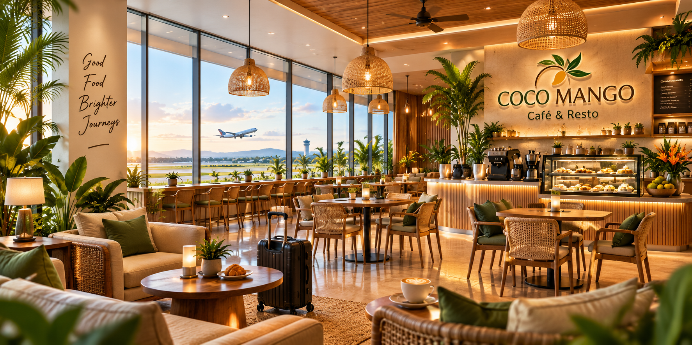
04 / LOHAS NEXT
미래 비전도착한 날의 첫 식사, 비행 전의 느긋한 휴식.
향후 국제선이 열리면 코코망고와 수영장이 딸린 클럽하우스가
공항 라운지처럼 쉬어가는 곳이 되기를 꿈꿉니다.
현재 공항 라운지 서비스는 운영하지 않습니다.
배경은 현재 수영장 사진이며, 설명은 향후 개발 방향입니다.
LET’S PLAN THE NEXT JOURNEY
여행에 담고 싶은 순간을 들려주세요. 여행사 제휴부터 시설 이용까지, 각 공식 페이스북 페이지에서 이야기를 나눌 수 있습니다.